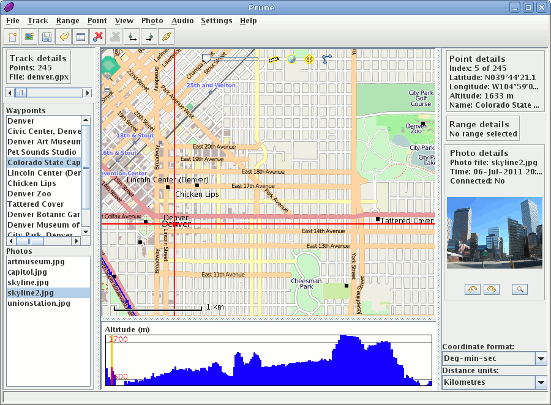

GpsPrune¶
GPS nyomvonal szerkesztés¶
GpsPrune is a tool for viewing, editing and converting coordinate data from GPS systems. It can be used for planning trips in advance, or for analysing the tracks recorded by GPS receivers.
It uses OpenStreetMap imagery to show recorded tracks and waypoints, and provides a variety of tools to let you edit, crop and prune the data points. It also has functions for correlating photos and audio files to the coordinates using the file timestamps.
GpsPrune uses GPSBabel, if available, to read data directly from a GPS receiver, and can send the edited data back to the receiver too.
A GpsPrune Mac OSX, Windows és Linux rendszeren fut és több mint tíz különböző nyelven érhető el.
{kind=link}
Alapfunkciók¶
- Adatok betöltése szövegfájlokból, gpx fájlokból, kml/kmz fájlokból vagy közvetlenül a GPS vevőből
- Zoomable map imagery from OpenStreetMap or any compatible server (such as HikeBikeMap, Reit- und Wanderkarte etc)
- Metszet vagy sebesség profil nézet
- Szerkesztő eszközök nyomvonalak létrehozására, módosítására, törlésére, megfordítására és tömörítésére
- Adatok 3D-s interaktív megjelenítése vagy POV formátumú export 3D-s megjelenítéshez, mindkettő tartalmazza a terepre ráhúzott háttértérképet
- Adatok mentése szövegfájlokba, gpx fájlokba, kml/kmz fájlokba vagy közvetlenül a GPS vevőre
- Fényképek és hangfájlok összekapcsolása a betöltött adatokkal az időbélyegek használatával
- Grafikonok készítése mint például távolság-magasság, idő-sebesség
- Távolság, emelkedés, ereszkedés, idő becslések és továbbiak
- Online resources such as Wikipedia, GPSies, OpenCaching.de and local weather forecasts
Részletek¶
Website: https://activityworkshop.net/software/gpsprune
Licenc: GNU General Public License (GPL) version 2
Szoftver verzió: 19.2.0
Támogatott platformok: GNU/Linux, Mac OSX, Windows